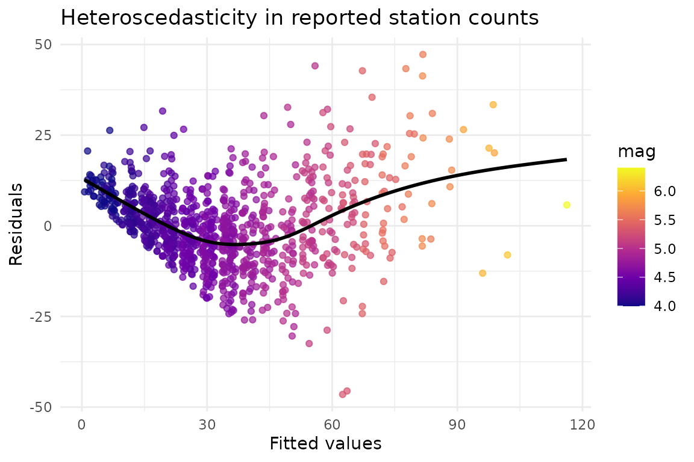
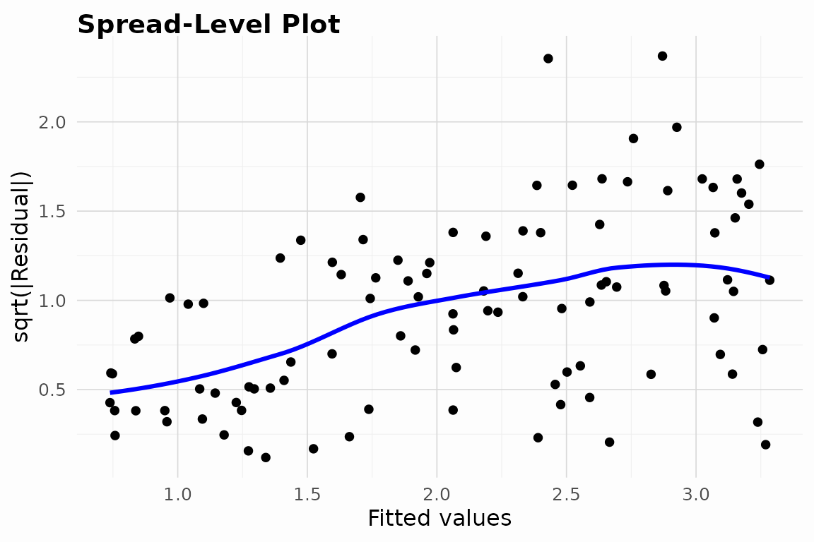
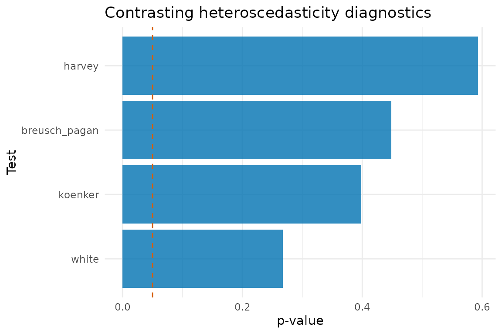

This vignette illustrates how to incorporate heteroTests into real analyses. Each case study follows a workflow of model specification, diagnostic testing, visualisation, and interpretation.
Case study 1: Seismic station counts
R’s built-in quakes dataset records 1,000 seismic events
near Fiji. We regress the number of reporting stations on event
magnitude and depth, and inspect the residual dispersion. The response
is a count, so its variance is expected to rise with its mean.
quakes_model <- lm(stations ~ mag + depth, data = quakes)
summary(quakes_model)
#>
#> Call:
#> lm(formula = stations ~ mag + depth, data = quakes)
#>
#> Residuals:
#> Min 1Q Median 3Q Max
#> -46.506 -6.996 -0.453 6.643 47.259
#>
#> Coefficients:
#> Estimate Std. Error t value Pr(>|t|)
#> (Intercept) -1.920e+02 4.332e+00 -44.335 < 2e-16 ***
#> mag 4.791e+01 9.016e-01 53.135 < 2e-16 ***
#> depth 1.318e-02 1.685e-03 7.822 1.32e-14 ***
#> ---
#> Signif. codes: 0 '***' 0.001 '**' 0.01 '*' 0.05 '.' 0.1 ' ' 1
#>
#> Residual standard error: 11.17 on 997 degrees of freedom
#> Multiple R-squared: 0.7404, Adjusted R-squared: 0.7399
#> F-statistic: 1422 on 2 and 997 DF, p-value: < 2.2e-16Formal diagnostics flag heteroscedasticity consistent with the classical literature on this dataset.
white_q <- performWhiteTest(quakes_model, quakes)
#> [INFO] Running White test
#> [INFO] White test completed: statistic = 125.558 df = 5 p = 0
bp_q <- performBPTest(quakes_model, quakes)
#> [INFO] Running Breusch-Pagan test
koenker_q <- performKoenkerTest(quakes_model, quakes)
#> [INFO] Running Koenker test
list(White = white_q, Breusch_Pagan = bp_q, Koenker = koenker_q)
#> $White
#>
#> White's test for heteroscedasticity
#>
#> data: quakes_model
#> X-squared = 125.56, df = 5, p-value < 2.2e-16
#> alternative hypothesis: heteroscedasticity present
#>
#>
#> $Breusch_Pagan
#>
#> Breusch-Pagan test for heteroscedasticity
#>
#> data: stations ~ mag + depth
#> X-squared = 191.93, df = 2, p-value < 2.2e-16
#>
#>
#> $Koenker
#>
#> Koenker studentized Breusch-Pagan test
#>
#> data: stations ~ mag + depth
#> X-squared = 111.31, df = 2, p-value < 2.2e-16
plot_data <- data.frame(
fitted = fitted(quakes_model),
residual = resid(quakes_model),
mag = quakes$mag
)
ggplot(plot_data, aes(x = fitted, y = residual, colour = mag)) +
geom_point(alpha = 0.7) +
scale_colour_viridis_c(option = "C") +
geom_smooth(se = FALSE, colour = "black") +
labs(
x = "Fitted values",
y = "Residuals",
colour = "mag",
title = "Heteroscedasticity in reported station counts"
) +
theme_minimal()
#> `geom_smooth()` using method = 'gam' and formula = 'y ~ s(x, bs = "cs")'
Interpretation. All three tests reject homoskedasticity. The
residual plot reveals wider dispersion at higher predicted counts and
for events of larger mag. Weighted least squares is a
common remedy.
wls_q <- fitWLS(quakes_model)
# Compare like with like: the residual variance across thirds of the fitted
# range, unweighted for OLS and weighted for WLS.
third <- cut(fitted(quakes_model), 3, labels = c("low", "mid", "high"))
rbind(
OLS_resid_var = round(tapply(residuals(quakes_model)^2, third, mean), 1),
WLS_weighted_resid_var = round(
tapply((residuals(wls_q) * sqrt(weights(wls_q)))^2, third, mean), 3))
#> low mid high
#> OLS_resid_var 80.30 196.900 526.400
#> WLS_weighted_resid_var 84.39 123.118 248.911The unweighted variance climbs steeply across the fitted range – a 6.6-fold spread – which is the heteroscedasticity the tests detected. Weighting cuts that to roughly 3-fold: a real improvement, and not a complete one, because the variance model is an approximation rather than the truth.
fitWLS() estimates the weights by regressing
log(e^2) on the model’s design matrix and inverting the
fitted variance, so the flattening above reflects the data rather than
the arithmetic. That has been true only since 0.9.0; before then the
weights were the raw inverse squared residuals, which put almost all the
weight on a handful of well-fitted points and made standard errors from
the fit unusable. For a count response like this one, a quasi-Poisson
GLM models the mean-variance link directly and is worth comparing
against.
Case study 2: Income volatility in simulated survey data
The hetero_data sample mimics survey responses with
variance inflation driven by the regressor x.
data(hetero_data, package = "heteroTests")
survey_model <- lm(y ~ x, data = hetero_data)
summary(survey_model)
#>
#> Call:
#> lm(formula = y ~ x, data = hetero_data)
#>
#> Residuals:
#> Min 1Q Median 3Q Max
#> -5.5452 -0.7444 0.0477 1.0228 5.6119
#>
#> Coefficients:
#> Estimate Std. Error t value Pr(>|t|)
#> (Intercept) 0.7378 0.3257 2.265 0.0257 *
#> x 2.5752 0.5389 4.779 6.19e-06 ***
#> ---
#> Signif. codes: 0 '***' 0.001 '**' 0.01 '*' 0.05 '.' 0.1 ' ' 1
#>
#> Residual standard error: 1.619 on 98 degrees of freedom
#> Multiple R-squared: 0.189, Adjusted R-squared: 0.1807
#> F-statistic: 22.84 on 1 and 98 DF, p-value: 6.193e-06HeteroDiagnostic() orchestrates multiple tests and
visualisations.
survey_diag <- HeteroDiagnostic(survey_model, hetero_data)
test(survey_diag, tests = c("white", "breusch_pagan"))
#> [INFO] Running White test
#> [INFO] White test completed: statistic = 11.7509 df = 2 p = 0.0028
#> [INFO] Running Breusch-Pagan test
#> $white
#>
#> White's test for heteroscedasticity
#>
#> data: model
#> X-squared = 11.751, df = 2, p-value = 0.002808
#> alternative hypothesis: heteroscedasticity present
#>
#>
#> $breusch_pagan
#>
#> Breusch-Pagan test for heteroscedasticity
#>
#> data: y ~ x
#> X-squared = 22.407, df = 1, p-value = 2.206e-06
#>
#>
#> $vif
#> x
#> 1
#>
#> $reset
#>
#> RESET test for nonlinearity
#>
#> data: y ~ x
#> F = 0.19163, df1 = 2, df2 = 96, p-value = 0.8259
#>
#>
#> $influence
#> $influence$cooks_distance
#> 1 2 3 4 5 6
#> 1.278638e-03 2.668070e-02 1.026024e-02 5.579106e-03 6.349527e-06 2.946038e-04
#> 7 8 9 10 11 12
#> 4.094356e-03 3.482987e-04 7.177781e-02 4.287314e-04 5.548406e-04 1.200565e-04
#> 13 14 15 16 17 18
#> 7.046439e-03 8.347577e-03 2.196691e-03 4.693749e-02 1.840612e-03 5.256587e-03
#> 19 20 21 22 23 24
#> 3.506653e-03 2.425103e-03 3.708640e-02 6.722310e-05 1.062325e-02 3.964618e-02
#> 25 26 27 28 29 30
#> 1.375270e-04 1.422646e-03 2.445764e-03 3.471924e-03 3.143240e-03 2.806895e-02
#> 31 32 33 34 35 36
#> 2.360327e-02 4.454703e-04 5.432384e-05 3.228093e-04 9.956784e-04 5.019479e-03
#> 37 38 39 40 41 42
#> 1.752426e-04 2.533352e-06 1.900465e-02 3.721407e-03 7.782027e-03 8.725955e-04
#> 43 44 45 46 47 48
#> 2.814303e-03 6.358229e-02 4.810743e-03 3.504117e-02 3.936733e-02 1.637565e-02
#> 49 50 51 52 53 54
#> 6.669138e-05 2.323281e-03 5.969784e-03 4.538897e-03 3.694097e-03 4.572941e-02
#> 55 56 57 58 59 60
#> 1.570581e-04 5.468116e-06 2.041706e-03 1.750695e-05 3.239294e-04 4.294907e-05
#> 61 62 63 64 65 66
#> 7.328273e-05 9.144212e-06 4.237541e-03 1.562168e-03 6.517162e-02 1.497437e-04
#> 67 68 69 70 71 72
#> 6.196408e-04 1.265350e-01 1.886956e-02 2.507069e-04 2.977826e-03 4.955547e-03
#> 73 74 75 76 77 78
#> 2.632780e-04 4.288032e-03 9.415246e-05 2.688959e-03 2.835162e-05 1.507058e-02
#> 79 80 81 82 83 84
#> 7.080331e-03 1.031802e-03 1.533660e-03 2.658511e-04 7.930212e-06 8.215338e-03
#> 85 86 87 88 89 90
#> 2.575105e-02 6.758119e-03 7.811066e-07 6.629211e-03 6.675177e-05 2.424104e-06
#> 91 92 93 94 95 96
#> 1.876505e-04 2.782585e-04 2.957596e-04 6.822842e-04 8.685014e-03 1.205923e-02
#> 97 98 99 100
#> 6.633159e-04 9.462862e-04 4.488622e-03 7.988868e-03
#>
#> $influence$influential
#> 9 16 44 54 65 68
#> 9 16 44 54 65 68
#>
#> $influence$cutoff
#> [1] 0.04081633
performGlejserTest(survey_model, hetero_data, "x")
#> [INFO] Running Glejser test
#>
#> Glejser test for heteroscedasticity
#>
#> data: y ~ x
#> t = 5.0897, df = 98, p-value = 1.733e-06
plot(survey_diag, plots = c("spread_level"))
#> $spread_level
#> `geom_smooth()` using formula = 'y ~ x'
Interpretation. Glejser’s test and the scale-location plot
both indicate that variance increases with x. Depending on
the modelling goal, analysts might log transform the response or model
the variance explicitly (e.g. via lm weights or
glm with a variance function).
Case study 3: Engineering reliability assessment
The diagnostic_data dataset contains correlated
predictors representing engineering stress measures. Nonlinear effects
and multicollinearity can mask heteroscedasticity. We run the broader
diagnostic suite to capture interactions between variance and structure
checks.
data(diagnostic_data, package = "heteroTests")
diagnostic_ext <- transform(diagnostic_data, x1_sq = x1^2)
engineering_model <- lm(y ~ x1 + x1_sq + x2, data = diagnostic_ext)
engineer_results <- runDiagnostics(engineering_model, diagnostic_ext,
tests = c("breusch_pagan", "koenker")
)
#> [INFO] Running Breusch-Pagan test
#> [INFO] Running Koenker test
safe_htest <- function(fn, method) {
tryCatch(
fn(),
error = function(e) {
message(method, " unavailable: ", e$message)
structure(
list(
statistic = c(statistic = NA_real_),
parameter = NA_real_,
p.value = NA_real_,
method = paste0(method, " (failed)"),
data.name = deparse(stats::formula(engineering_model))
),
class = "htest"
)
}
)
}
white_engineering <- safe_htest(
function() performWhiteTest(engineering_model, diagnostic_ext, cross_products = FALSE),
"White test"
)
#> [INFO] Running White test
#> [INFO] White test: dropped 1 collinear auxiliary term(s); using df = 5.
#> [INFO] White test completed: statistic = 6.4178 df = 5 p = 0.2677
bp_engineering <- safe_htest(
function() performBPTest(engineering_model, diagnostic_ext),
"Breusch-Pagan test"
)
#> [INFO] Running Breusch-Pagan test
koenker_engineering <- safe_htest(
function() performKoenkerTest(engineering_model, diagnostic_ext),
"Koenker test"
)
#> [INFO] Running Koenker test
harvey_engineering <- safe_htest(
function() performHarveyTest(engineering_model),
"Harvey test"
)
#> [INFO] Running Harvey test
engineer_tests <- list(
white = white_engineering,
breusch_pagan = bp_engineering,
koenker = koenker_engineering,
harvey = harvey_engineering
)
engineer_tests
#> $white
#>
#> White's test for heteroscedasticity
#>
#> data: engineering_model
#> X-squared = 6.4178, df = 5, p-value = 0.2677
#> alternative hypothesis: heteroscedasticity present
#>
#>
#> $breusch_pagan
#>
#> Breusch-Pagan test for heteroscedasticity
#>
#> data: y ~ x1 + x1_sq + x2
#> X-squared = 2.65, df = 3, p-value = 0.4488
#>
#>
#> $koenker
#>
#> Koenker studentized Breusch-Pagan test
#>
#> data: y ~ x1 + x1_sq + x2
#> X-squared = 2.9548, df = 3, p-value = 0.3986
#>
#>
#> $harvey
#>
#> Harvey test for multiplicative heteroscedasticity
#>
#> data: y ~ x1 + x1_sq + x2; variance regressors: model regressors
#> X-squared = 1.9025, df = 3, p-value = 0.5929
#> alternative hypothesis: error variance is a multiplicative function of the variance regressorsThe heteroscedasticity tests disagree, so we inspect the accompanying multicollinearity and RESET diagnostics.
engineer_results$vif
#> x1 x1_sq x2
#> 102.975949 1.011998 102.854968
engineer_results$reset
#>
#> RESET test for nonlinearity
#>
#> data: y ~ x1 + x1_sq + x2
#> F = 1.336, df1 = 2, df2 = 144, p-value = 0.2661Finally, we consolidate -values to visualise which tests detect variance instability.
pvals <- sapply(engineer_tests, function(x) x$p.value)
pval_df <- data.frame(
test = names(pvals),
p_value = as.numeric(pvals)
)
ggplot(pval_df, aes(x = reorder(test, p_value), y = p_value)) +
geom_col(fill = "#0072B2", alpha = 0.8) +
geom_hline(yintercept = 0.05, linetype = "dashed", colour = "#D55E00") +
coord_cartesian(ylim = c(0, 1)) +
coord_flip() +
labs(
x = "Test",
y = "p-value",
title = "Contrasting heteroscedasticity diagnostics"
) +
theme_minimal()
#> Coordinate system already present.
#> ℹ Adding new coordinate system, which will replace the existing one.
Interpretation. Koenker’s robust variant is conservative in this moderate sample, whereas White’s omnibus test remains sensitive to nonlinear variance. The RESET test also signals functional-form misspecification, suggesting that a variance stabilising transformation or spline terms could stabilise the error variance while addressing nonlinearity.